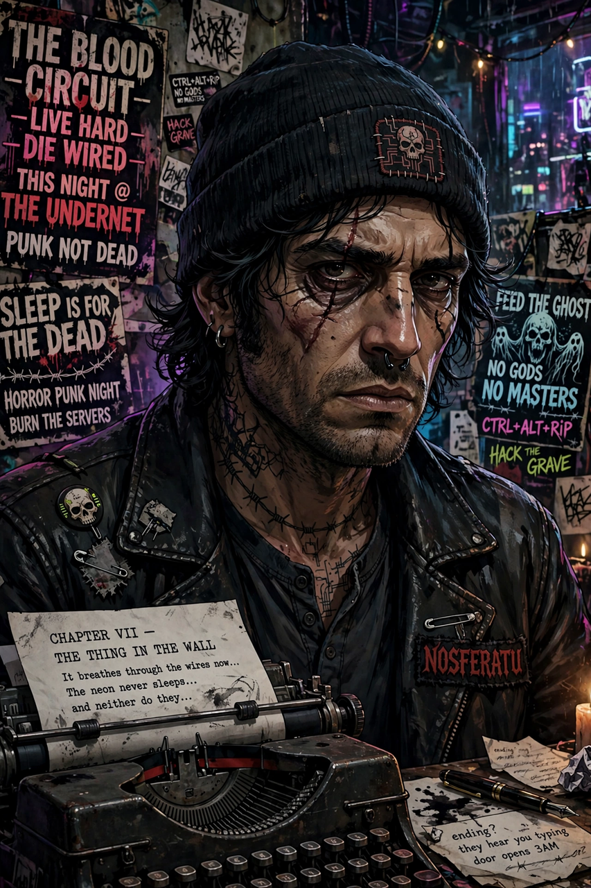

John Patrick Shirley (born February 10, 1953) is an American writer, primarily of horror, science fiction, dark fantasy, westerns and songwriting. He has also written tie-in novels for franchises including Batman, Predator and BioShock. Shirley is credited as a formative figure in the cyberpunk movement: his trilogy A Song Called Youth (the Eclipse trilogy), written in the 1980s, anticipated the genre's themes of corporate power, media saturation and resistance, and he wrote the screenplay for the film The Crow (1994).

| Born | February 10, 1953, Houston, Texas, U.S. |
|---|---|
| Occupation | Writer, screenwriter, musician |
| Genre | Horror, science fiction, cyberpunk |
| Notable works | A Song Called Youth trilogy; The Crow (screenplay); Demons (2000) |
| Awards | Bram Stoker Award; International Horror Guild Award |
Shirley was born in Houston and grew up in the San Francisco Bay Area and Portland, Oregon. His early novels, including Dracula in Love (1979) and City Come A-Walkin' (1980), blended punk energy with speculative fiction; William Gibson acknowledged the latter as an influence on cyberpunk. The Eclipse trilogy — Eclipse (1985), Eclipse Penumbra (1988) and Eclipse Corona (1990) — depicts a near-future Europe under a corporate-backed fascist security firm. Shirley fronted punk and funk bands including SadoNation and the Panther Moderns, and wrote lyrics for Blue Öyster Cult, including much of the album Heaven Forbid (1998).
Shirley co-wrote the screenplay for The Crow (1994) with David J. Schow, and wrote for television series including Star Trek: Deep Space Nine and The Real Ghostbusters. His horror novella Demons (2000) won the International Horror Guild Award. Later works include the novel BioShock: Rapture (2011), the apocalyptic novel Doyle After Death (2013) and numerous short story collections such as Black Butterflies (1998), which won the Bram Stoker Award.